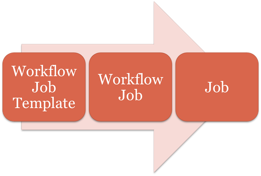

21. Workflows
Workflows allow you to configure a sequence of disparate job templates (or workflow templates) that may or may not share inventory, playbooks, or permissions. However, workflows have ‘admin’ and ‘execute’ permissions, similar to job templates. A workflow accomplishes the task of tracking the full set of jobs that were part of the release process as a single unit.
Job or workflow templates are linked together using a graph-like structure called nodes. These nodes can be job templates, workflow job templates, project syncs, inventory syncs, approvals or management jobs. A template can be part of different workflows or used multiple times in the same workflow. A copy of the graph structure is saved to a workflow job when you launch the workflow.
The example below shows a workflow with a project sync, two job templates, an approval and an inventory sync:

As the workflow runs, jobs are spawned from the node’s linked template. Nodes linking to a job template which has prompt-driven fields (job_type, job_tags, skip_tags, limit) can contain those fields, and will not be prompted on launch. Job templates that prompt for an inventory or credentials without defaults can be used in a workflow if the node provides those values in its Prompts step; credentials that ask for a password at launch cannot be used in a workflow node.
21.1. Workflow scenarios and considerations
Consider the following scenarios for building workflows:
A root node always runs when the workflow starts (Run always), and its run condition is not editable.
A node can have multiple parents and children may be linked to any of the states of success, failure, or always. If always, then the state is neither success or failure. States apply at the node level, not at the workflow job template level.
The workflow job fails if a node fails (or ends in error, is canceled, or has no template to run) and that node has no Run on fail or Run always child to handle it; its explanation is then “No error handling paths found, marking workflow as failed”, and the nodes are named in the log of the controller. Otherwise, when all the nodes that had to run have finished, the workflow job is successful, even if some nodes failed and their error paths ran.
If you remove a node within the workflow, its child nodes are connected to its parent nodes and keep their run condition, unless a link between them already exists or the new parent is Start (then the link becomes Run always); see Node building scenarios.
You could have a convergent workflow, where multiple jobs converge into one. In this scenario, any of the jobs or all of them must complete as specified before the next one runs, depending on the convergence setting of the converging node. In both cases the converging node waits until all its parents that run have finished; Any then needs one of them to meet the run condition of its link, and All needs every one. For example, automation controller can run two job templates in parallel and, when they both finish and succeed, trigger a third one that converges with All.
Prompts for inventory and surveys will apply to workflow nodes in workflow job templates.
If you launch from the API, running a
getcommand displays a list of warnings and highlights missing components. The basic workflow for a workflow job template is illustrated below.

It is possible to launch several workflows simultaneously, and set a schedule for when to launch them. You can set notifications on workflows, such as when a job completes, similar to that of job templates.
Note
Job slicing is intended to scale job executions horizontally. Enabling job slicing on a job template divides an inventory to be acted upon in the number of slices configured at launch time and then starts a job for each slice.
It is expected that the number of slices will be equal to or less than the number of controller nodes. Setting an extremely high number of job slices (e.g., thousands), while allowed, can cause performance degradation as the job scheduler is not designed to schedule simultaneously thousands of workflow nodes, which are what the sliced jobs become.
A workflow can include other workflows (nested workflows). A workflow that would include itself, directly or through its ancestors, is recursive: automation controller refuses to start it, and that child workflow job fails with an explanation of the recursion. The parent workflow continues through its failure paths, if any.
Artifacts gathered in jobs in the sub-workflow will be passed to downstream nodes.
An inventory can be set at the workflow level, or prompt for inventory on launch.
When launched, all job templates in the workflow that have
ask_inventory_on_launch=truewill use the workflow level inventory.Job templates that do not prompt for inventory will ignore the workflow inventory and run against their own inventory.
If a workflow prompts for inventory, schedules and other workflow nodes may provide the inventory.
In a workflow convergence scenario,
set_statsdata will be merged in an undefined way, so it is recommended that you set unique keys.
21.2. Extra Variables
Also similar to job templates, workflows use surveys to specify variables to be used in the playbooks in the workflow, called extra_vars. Survey variables are combined with extra_vars defined on the workflow job template, and saved to the workflow job extra_vars. extra_vars in the workflow job are combined with job template variables when spawning jobs within the workflow.
For a job template launched by a workflow, the extra variables of the job are combined in this order, where later ones override earlier ones with the same name:
the extra variables of the job template, as in Extra Variables;
the extra variables prompted in the workflow node;
the artifacts of the previous jobs in the workflow (the variables they set with
set_stats);the extra variables of the workflow job: those of the workflow job template, then the answers of its survey (including default values), then the extra variables given at launch.
Workflows included in a workflow will follow the same variable precedence - they will only inherit variables if they are specifically prompted for, or defined as part of a survey.
In addition to the workflow extra_vars, jobs and workflows ran as part of a workflow can inherit variables in the artifacts dictionary of a parent job in the workflow (also combining with ancestors further upstream in its branch). These can be defined by the set_stats Ansible module.
If you use the set_stats module in your playbook, you can produce results that can be consumed downstream by another job, for example, to pass the version that a deployment installed to the job that verifies it. In this example, there are two playbooks that can be combined in a workflow to exercise artifact passing:
invoke_set_stats.yml: first playbook in the workflow:
---
- hosts: localhost
gather_facts: false
tasks:
- name: Decide the release to deploy
ansible.builtin.set_fact:
release: "1.4.2"
- name: Pass the release to the next nodes of the workflow
ansible.builtin.set_stats:
data:
deployed_release: "{{ release }}"
use_set_stats.yml: second playbook in the workflow
---
- hosts: localhost
gather_facts: false
tasks:
- name: Show the release received from the previous node
ansible.builtin.debug:
msg: "Verifying release {{ deployed_release }}"
The set_stats module processes this workflow as follows:
The invoke_set_stats playbook invokes
set_statsto savedeployed_releaseas an artifact of its job.The next node of the workflow receives the artifacts of its parent as extra variables, so the use_set_stats playbook can use
deployed_release.
Note
For artifacts to work, keep the default setting, per_host = False in the set_stats module.
21.3. Workflow States
The workflow job can have the following states:
New and Pending
Waiting
Running
Success
Failed (see the scenarios above)
Error
Canceled
Canceling a job of a workflow marks that node as canceled, which counts as a failure: its Run on fail and Run always children still run. Canceling the workflow job cancels its running jobs and starts no new nodes.
21.4. Role-Based Access Controls
To edit and delete a workflow job template, you must have its admin role. To create a workflow job template, you need the Organization WorkflowJobTemplate Admin role on its organization (organization administrators and system administrators have it); if it uses an inventory, you also need the Use role on that inventory. However, you can run a workflow job template that contains job templates you don’t have permissions for. Similar to projects, organization admins can create a blank workflow and then grant an ‘admin_role’ to a low-level user, after which they can go about delegating more access and building the graph. You must have execute access to a job template to add it to a workflow job template.
Other tasks such as the ability to make a duplicate copy and re-launch a workflow can also be performed, depending on what kinds of permissions are granted to a particular user. Generally, you should have permissions to all the resources used in a workflow (like job templates) before relaunching or making a copy.
For more information on performing the tasks described in this section, refer to the Administration Guide.